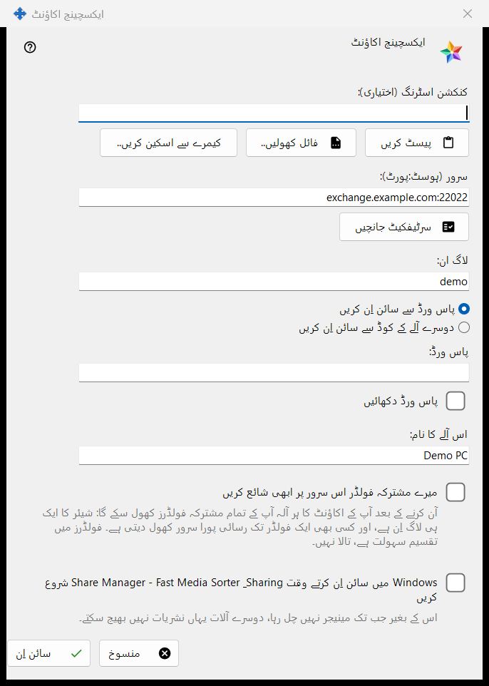
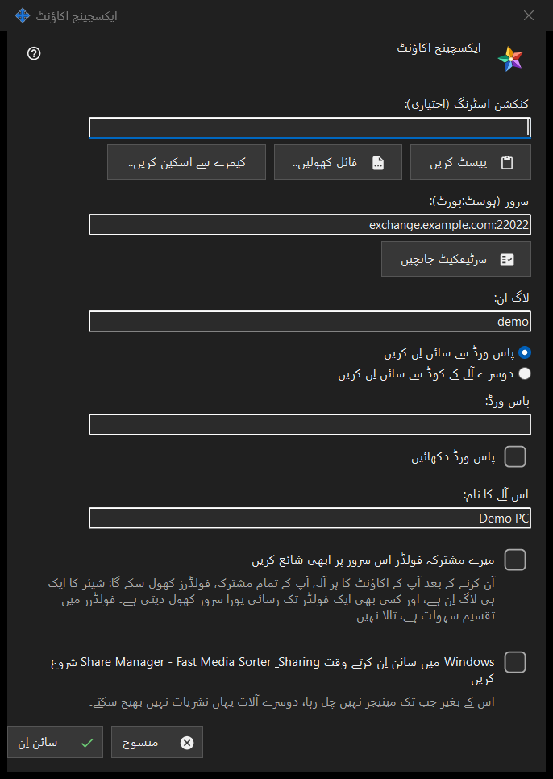

ایکسچینج اکاؤنٹ
یہ کس مقصد کے لیے ہے
اس پی سی کو Media Exchange Server پر کسی اکاؤنٹ کے آلے کے طور پر سائن اِن کرتا ہے۔ یہ ونڈو Share Manager کی ترتیبات کے ایکسچینج اکاؤنٹ صفحے کے سائن اِن.. بٹن سے کھلتی ہے، اور ایکسچینج سرور کے ذریعے شائع کریں.. سے بھی کھلتی ہے، جو اسے اشاعت والے اختیار پر پہلے سے نشان لگا کر کھولتا ہے۔


اس ترتیب میں
- چاہیں تو کنکشن اسٹرنگ پیسٹ کریں، کھولیں یا اسکین کریں؛ وہ سرور اور لاگ اِن بھر دیتی ہے۔
- سرٹیفکیٹ جانچیں دبائیں اور، جب تک سسٹم اس پر بھروسہ نہ کرتا ہو یا اسٹرنگ اسے ساتھ نہ لائی ہو، فنگر پرنٹ کا آپریٹر کے فنگر پرنٹ سے موازنہ کریں اور اس سرٹیفکیٹ پر بھروسہ کریں دبائیں۔
- لاگ اِن اور پاس ورڈ یا پیئرنگ کوڈ درج کریں۔
- آلے کا نام اور اختیارات طے کریں۔
- سائن اِن دبائیں۔
عناصر
کنکشن اسٹرنگ
کنکشن اسٹرنگ (اختیاری) خانے میں وہ اسٹرنگ آتی ہے جسے آپ پیسٹ کریں سے پیسٹ کرتے ہیں، فائل کھولیں.. سے .fmsexch فائل یا QR تصویر سے لوڈ کرتے ہیں، یا کیمرے سے اسکین کریں.. سے پڑھتے ہیں۔ وہ صرف سرور اور لاگ اِن بھرتی ہے؛ سائن اِن دبانے تک کچھ بھی کنیکٹ نہیں ہوتا۔ فنگر پرنٹ والی اسٹرنگ اسی سرٹیفکیٹ کو پن کر دیتی ہے، اس لیے ہاتھ سے موازنہ کرنے کو کچھ نہیں رہتا۔ دعوت نامے والی اسٹرنگ ونڈو کو رجسٹریشن پر لے جاتی ہے۔ ناقابلِ استعمال اسٹرنگ پر ایک سطر کا انکار ملتا ہے۔
سرور اور سرٹیفکیٹ
سرٹیفکیٹ جانچیں سرور (ہوسٹ:پورٹ) خانے میں لکھے سرور سے کنیکٹ ہوتا ہے اور سرور کے سرٹیفکیٹ کا فنگر پرنٹ دکھاتا ہے۔ اگر سسٹم سرٹیفکیٹ پر بھروسہ کرتا ہے تو کچھ پن کرنے کی ضرورت نہیں۔ ورنہ فنگر پرنٹ کا موازنہ اس فنگر پرنٹ سے کریں جو سرور کے آپریٹر نے آپ کو دیا ہے اور اس سرٹیفکیٹ پر بھروسہ کریں دبائیں؛ سسٹم کے لیے نامعلوم سرٹیفکیٹ کو صرف یہی بٹن قبول کرتا ہے۔ سرور کا متن بدلنے پر جانچ بھلا دی جاتی ہے۔ جب تک کوئی سرٹیفکیٹ قابلِ اعتماد نہ ہو، Enter کچھ نہیں کرتا، اس لیے کوئی پاس ورڈ ایسے سرور تک نہیں جاتا جس کی کسی نے تصدیق نہ کی ہو۔
لاگ اِن، پاس ورڈ اور پیئرنگ کوڈ
لاگ ان درج کریں اور پاس ورڈ سے سائن اِن کریں (پاس ورڈ، ساتھ میں پاس ورڈ دکھائیں) یا دوسرے آلے کے کوڈ سے سائن اِن کریں (پیئرنگ کوڈ، جو اسی اکاؤنٹ کا کوئی دوسرا آلہ جاری کرتا ہے) میں سے انتخاب کریں۔ قدر بھیجتے ہی خانہ صاف ہو جاتا ہے، نتیجہ کچھ بھی ہو؛ آلہ صرف ایک ٹوکن رکھتا ہے، پاس ورڈ کبھی نہیں۔
دعوت نامے سے رجسٹریشن
جب اسٹرنگ میں دعوت نامہ ہو تو سائن اِن کے دونوں اختیارات کی جگہ رجسٹریشن آ جاتی ہے: اکاونٹ کا پاس ورڈ اور پاس ورڈ ایک بار اور خانے نیا پاس ورڈ طے کرتے ہیں، جو دکھائی گئی پالیسی پر پورا اترنا چاہیے (کم از کم 10 حروف، ایک بڑا اور ایک چھوٹا لاطینی حرف اور ایک ہندسہ)، اور بٹن پر اکاونٹ بنائیں لکھا ہوتا ہے۔
آلے کا نام اور اختیارات
اس آلے کا نام (زیادہ سے زیادہ 64 حروف) شروع میں کمپیوٹر کا نام ہوتا ہے۔ میرے مشترکہ فولڈر اس سرور پر ابھی شائع کریں بند رہتا ہے، جب تک آپ ایکسچینج سرور کے ذریعے شائع کریں.. کے راستے سے نہ آئے ہوں؛ آن کرنے پر آپ کے اکاؤنٹ کا ہر آلہ آپ کے تمام مشترکہ فولڈر کھول سکتا ہے، کیونکہ شیئرنگ کا لاگ اِن ایک ہی ہے۔ آخری اختیار آپ کے Windows میں سائن اِن کرتے ہی Share Manager شروع کر دیتا ہے (بطورِ طے شدہ بند)، تاکہ دوسرے آلات اس پی سی پر نشر کر سکیں۔
ایک وقت میں ایک سرور
ایک آلہ ایک ہی سرور کا ہوتا ہے۔ دوسرے سرور میں سائن اِن کرنے پر پوچھا جاتا ہے کہ موجودہ سرور چھوڑنا ہے یا نہیں، اور پرانے سرور پر اشاعت رک جاتی ہے۔ رابطہ ناکام ہونے کے بعد Why doesn't it connect?.. بٹن کنکشن ٹیسٹ کھولتا ہے۔
مینیجر کی ترتیبات · SFTP اشتراک کی ترتیبات · ایکسچینج سرور کی ترتیبات